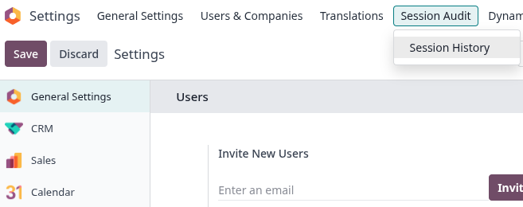
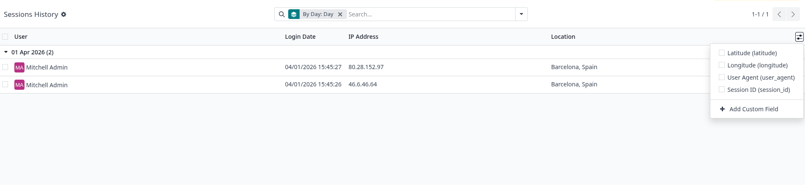
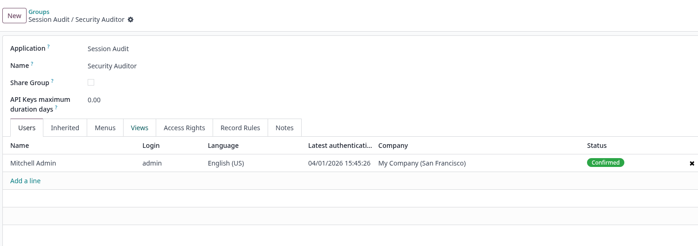

Key Features
Complete Audit Trail
IP & GeoIP Tracking
Role-Based Access Control

Once the module is installed, a new Session History menu entry is added under Settings → Technical. Security Auditors can access it directly from there to review all recorded login sessions.

Each successful authentication is recorded with key details: user, IP address, user agent, timestamp and optional GeoIP location. Records are grouped by day by default, making it easy to spot unusual activity at a glance.

The module creates a new Security Auditor user group. Only users assigned to this group have read access to the session history, ensuring sensitive audit data is protected and visible only to authorised personnel.

Complete Audit Trail
IP & GeoIP Tracking
Role-Based Access Control